39秒・横型（16:9）／動画：https://youtu.be/g7iqy67-Ca8
産後、自分のことは後回しにしてきたお母さんへ。体型は体重だけではなく、姿勢と骨盤のバランスで印象が変わる。“美ボディー”を、やさしく整えていくことを伝える動画です。
| 流れ | シーン | 内容 |
|---|---|---|
| A 気づき | 01〜04 | スマホの写真で自分の姿に気づく → 子どもが生まれてから、自分のことは後回し → 「その姿勢、ここから。」 |
| B 見方を変える | 05〜07 | いただいた姿勢チェックのお写真で、体型は体重だけじゃない、姿勢で印象は変わる、を見せます。 |
| C 整える | 08〜12 | 頭と骨盤からやさしく整える施術、先生がお迎えする様子、施術前後の姿勢の変化。 |
| D 未来 | 13〜15 | 鏡を見るのが楽しみ、自分をいたわる時間、軽やかな毎日へ。 |
| E 人・場所 | 16〜19 | お客様の声（Googleのクチコミを要約）、じっくり聞く相談コーナー、完全予約制の施術室、駅からの道順。 |
| F 行動 | 20 | 白く明るくなって、屋号・電話・QRの最後のご案内画面へ。 |
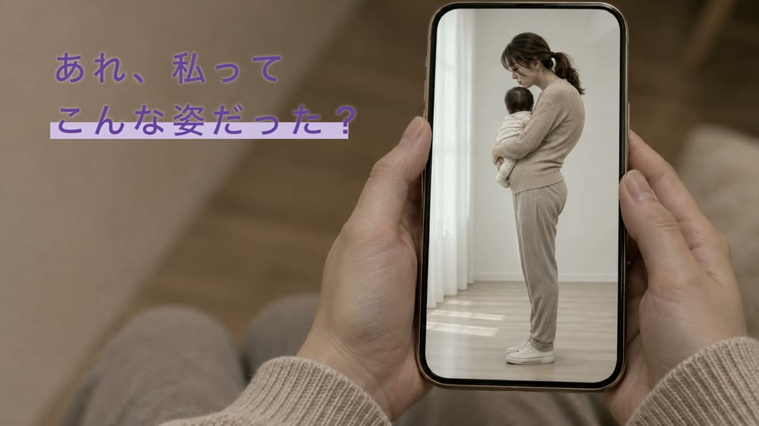
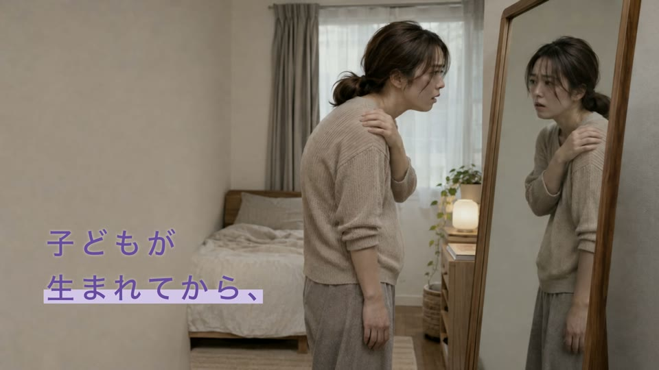
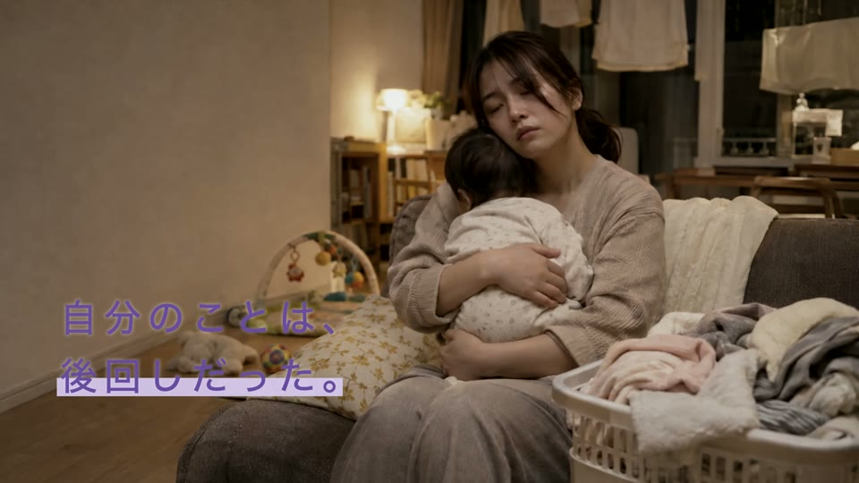
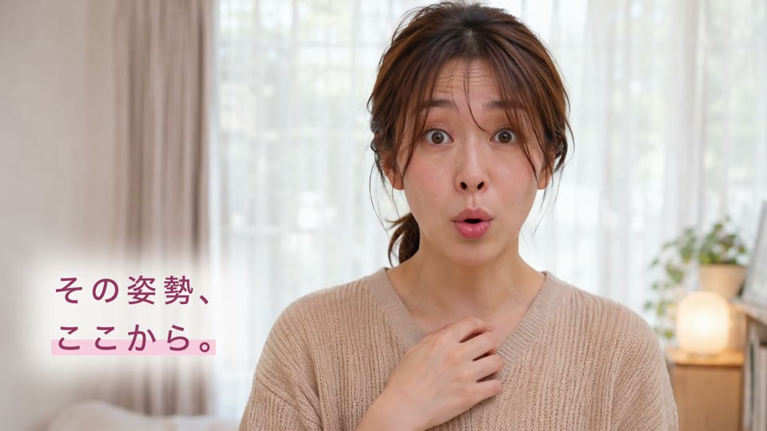
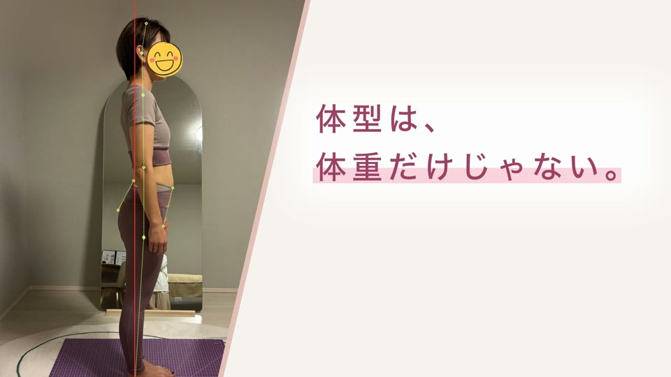
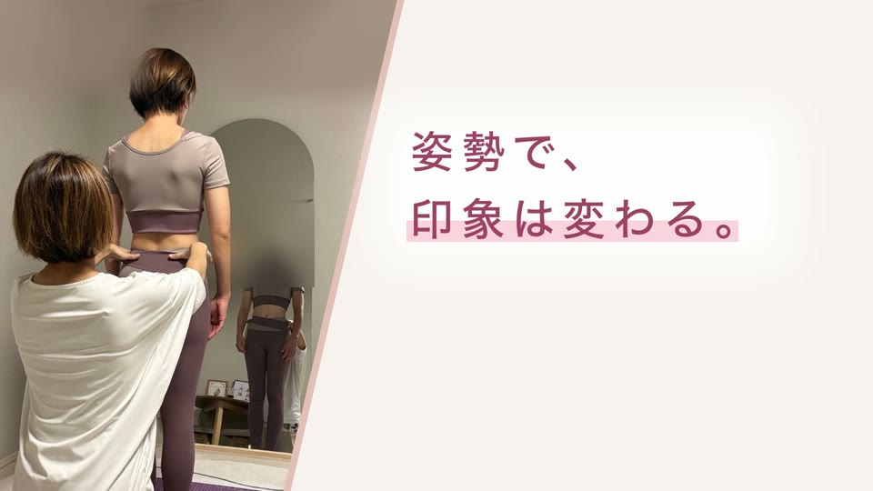
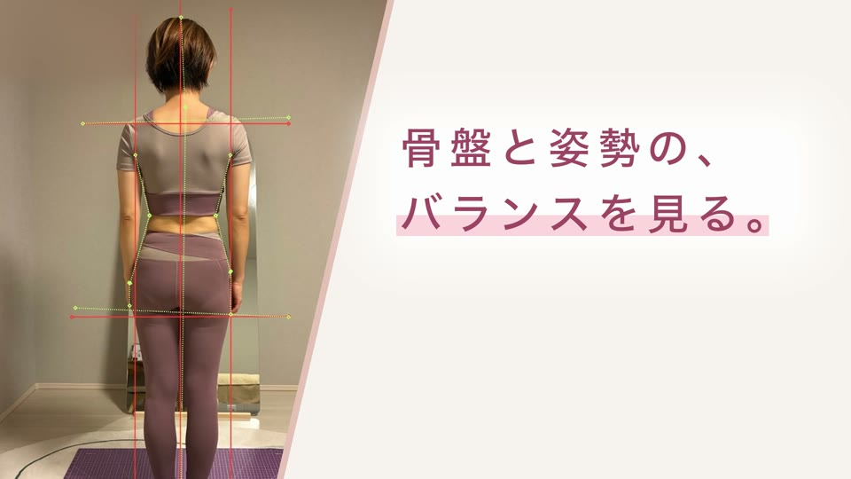
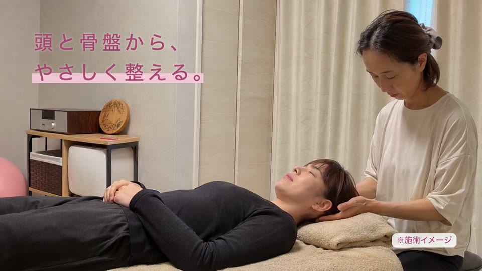
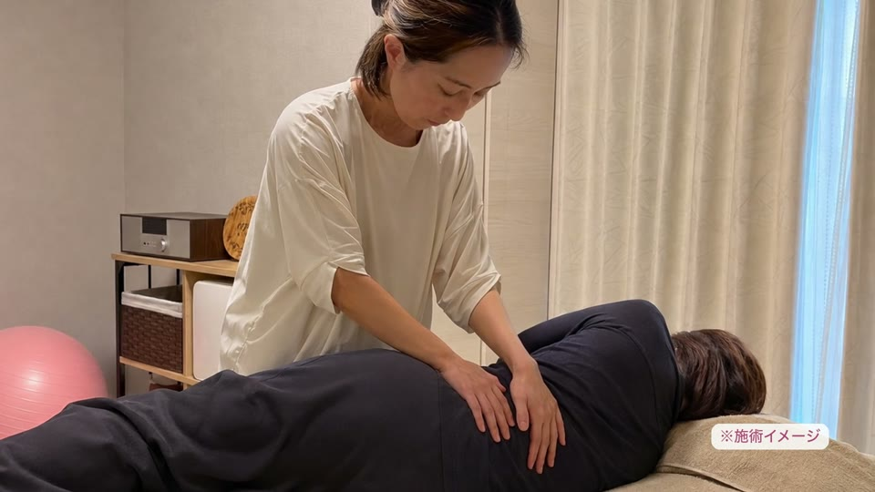
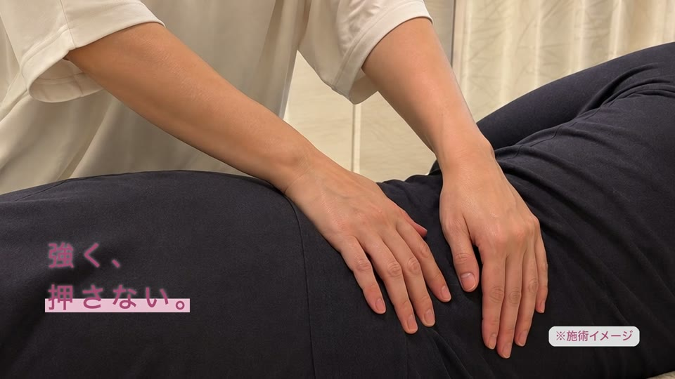
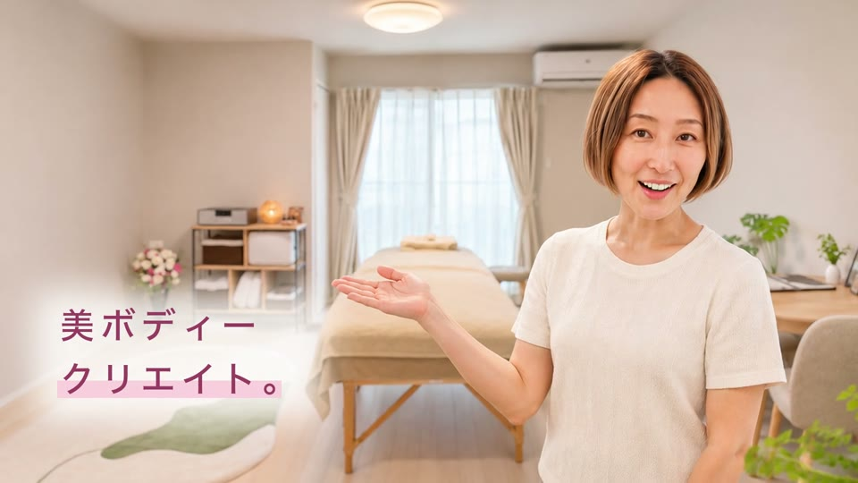
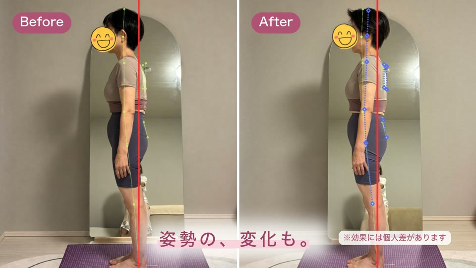
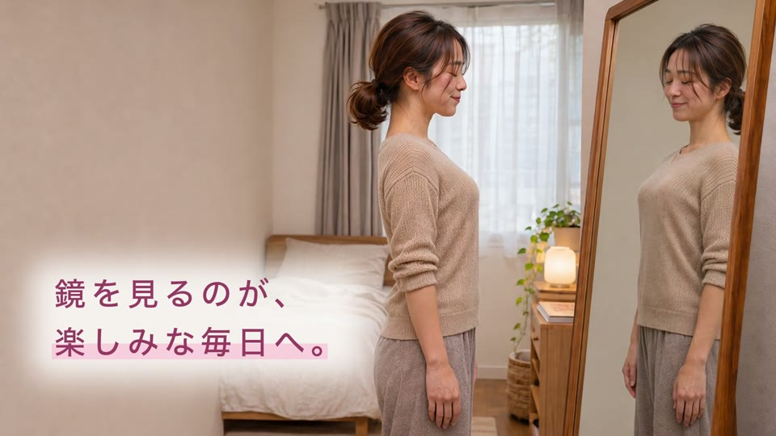
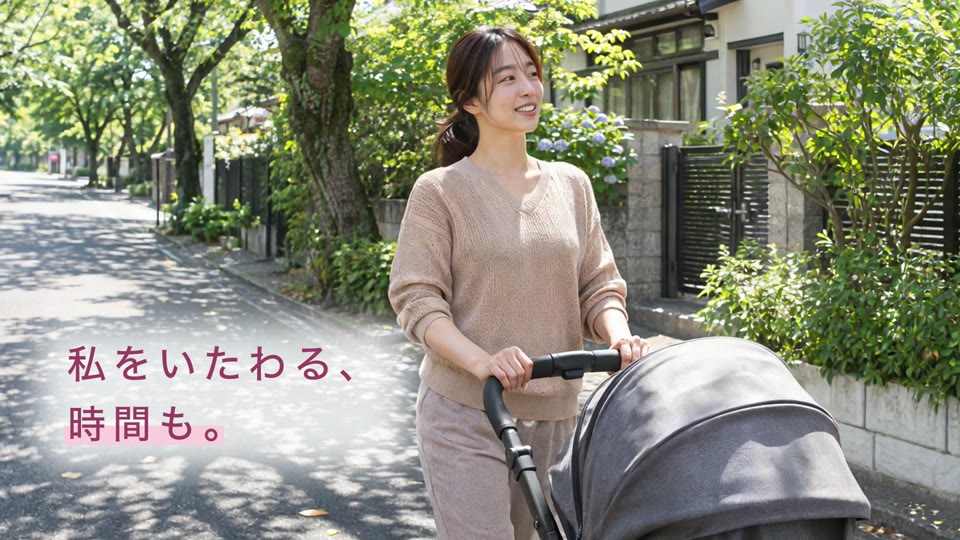
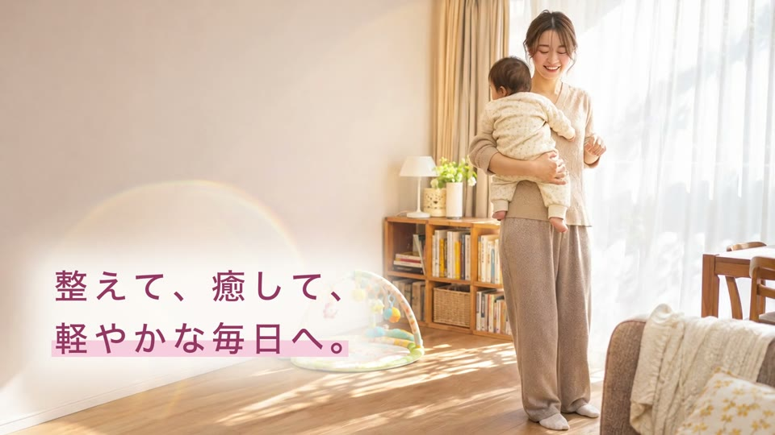
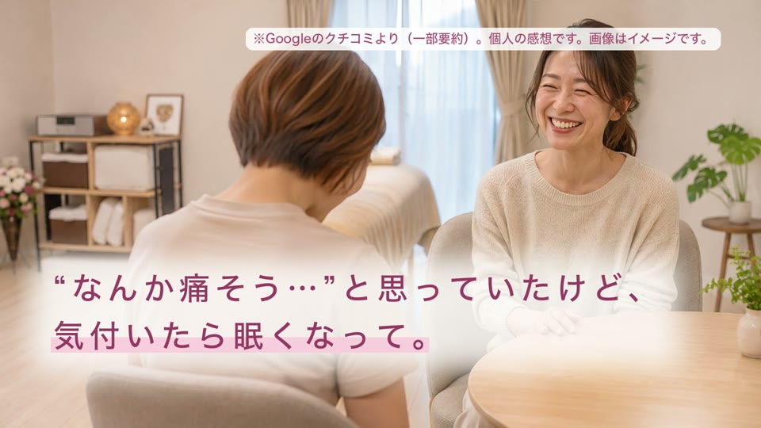
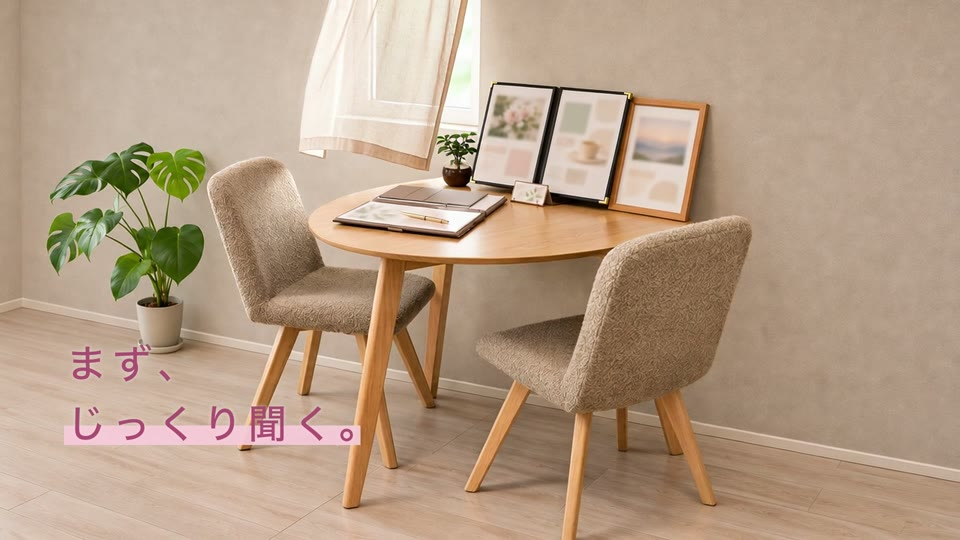
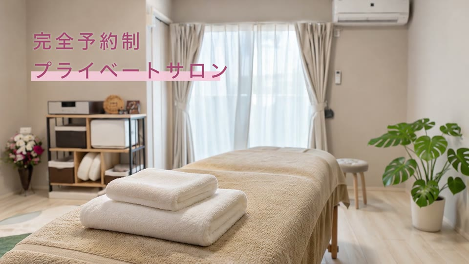
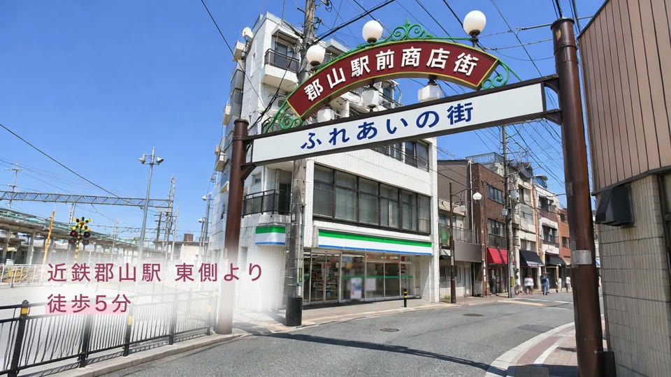
| No. | 秒 | テロップ | 画面の注記 |
|---|---|---|---|
| 01 | 0.0〜2.0 | あれ、私って こんな姿だった？ | |
| 02 | 2.0〜3.5 | 子どもが 生まれてから、 | |
| 03 | 3.5〜5.0 | 自分のことは、 後回しだった。 | |
| 04 | 5.0〜6.5 | その姿勢、 ここから。 | |
| 05 | 6.5〜8.0 | 体型は、 体重だけじゃない。 | |
| 06 | 8.0〜9.5 | 姿勢で、 印象は変わる。 | |
| 07 | 9.5〜10.5 | 骨盤と姿勢の、 バランスを見る。 | |
| 08 | 10.5〜12.0 | 頭と骨盤から、 やさしく整える。 | ※施術イメージ |
| 09 | 12.0〜13.0 | （テロップなし） | ※施術イメージ |
| 10 | 13.0〜14.5 | 強く、 押さない。 | ※施術イメージ |
| 11 | 14.5〜15.5 | 美ボディー クリエイト。 | |
| 12 | 15.5〜17.5 | 姿勢の、 変化も。 | ※効果には個人差があります |
| 13 | 17.5〜20.0 | 鏡を見るのが、 楽しみな毎日へ。 | |
| 14 | 20.0〜22.0 | 私をいたわる、 時間も。 | |
| 15 | 22.0〜25.0 | 整えて、癒して、 軽やかな毎日へ。 | |
| 16 | 25.0〜27.5 | “なんか痛そう…”と思っていたけど、 気付いたら眠くなって。 | ※Googleのクチコミより（一部要約）。個人の感想です。画像はイメージです。 |
| 17 | 27.5〜29.0 | まず、 じっくり聞く。 | |
| 18 | 29.0〜31.0 | 完全予約制 プライベートサロン | |
| 19 | 31.0〜34.0 | 近鉄郡山駅 東側より 徒歩5分 | |
| 20 | 34.0〜39.0 | 最後のご案内画面（屋号・駅から徒歩5分・電話・予約（freee）とLINEのQR・注記） |
動画をご覧いただき、気になるところを教えてください。
いただいた内容をもとに、仕上げてまいります。どうぞよろしくお願いいたします。